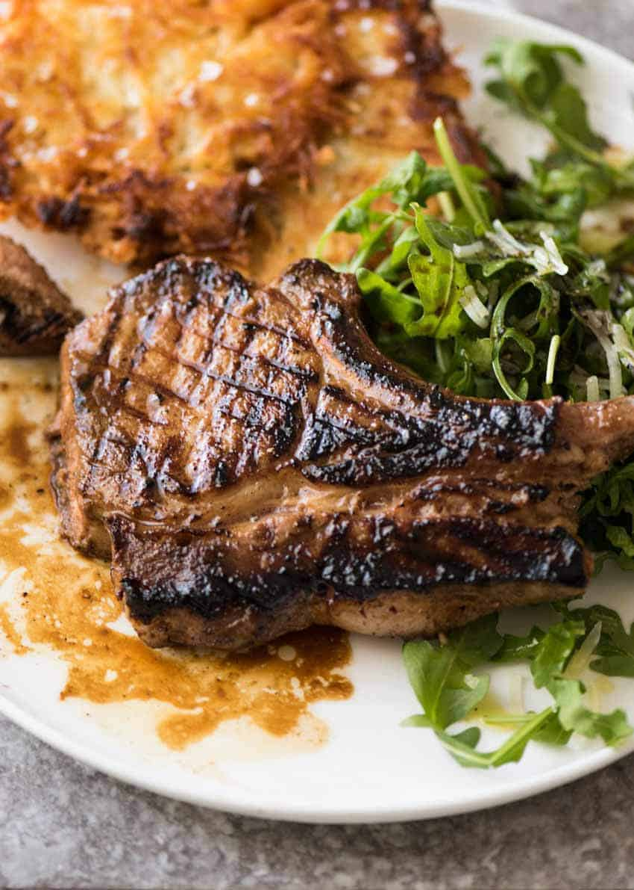

Pork Chop Marinade

The best Pork Chop Marinade!
I love using marinades because they are an easy way to infuse meats with delicious flavor, making them extra tender and
juicy. Marinades also allow for flexibility, since you can marinate pork chops for just one hour or up to 8 hours before
cooking. You can even freeze pork chops in this pork chop marinade to cook later.
With grilling season here, I’m excited to share my all-time favorite pork chop marinade. It takes just minutes to mix
up, and it makes the most amazing Grilled Pork Chops!
Ingredients
- Olive Oil
- Soy Sauce
- Brown Sugar
- Dijon Mustard
- Garlic
- Black Pepper
Steps
- Before pouring the marinade over the pork chops, you can reserve a few tablespoons to brush on the meat during the last
few minutes of cooking. This is optional.
- This marinade can be used on bone-in pork chops or boneless pork chops. I prefer to use bone-in chops because the bone
keeps the meat extra moist and juicy.
- Make sure the pork chops are well coated in the marinade. I like to flip the bag over (or flip the pork chops if
marinating in a dish) about halfway through the marinating time to make sure both sides soak up the flavor.
- Always marinate pork chops in the refrigerator.
- For food safety, discard the extra marinade that came in contact with the raw pork.
- Don’t overcook pork chops, or they may turn out dry and tough. According to the USDA, pork chops should be cooked to at
least 145° F and then allowed to rest for a minimum of 3 minutes before eating.